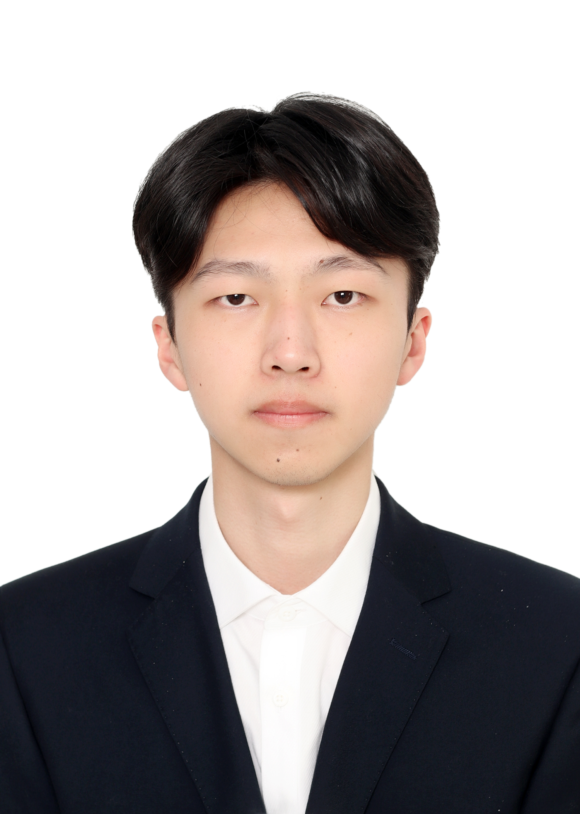
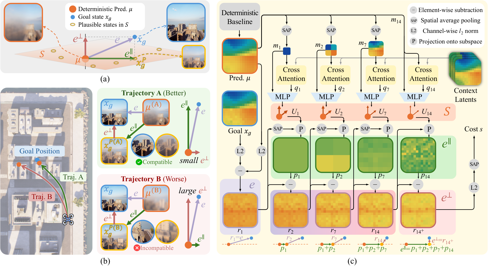

Tsinghua University
Sep 2026 – Present
- M.S. in Artificial Intelligence, Shenzhen International Graduate School
- Advisor: Prof. Yansong Tang
I am a master's student at Tsinghua University, advised by Prof. Yansong Tang. Previously, I received my B.S. degree in artificial intelligence from Dalian University of Technology in 2026.
My research interests lie in embodied AI and world models, with a focus on how intelligent agents can predict and act reliably in complex environments.

(* Equal contribution)

We introduce an uncertainty-aware navigation world model that evaluates candidate trajectories for aerial image-goal navigation.